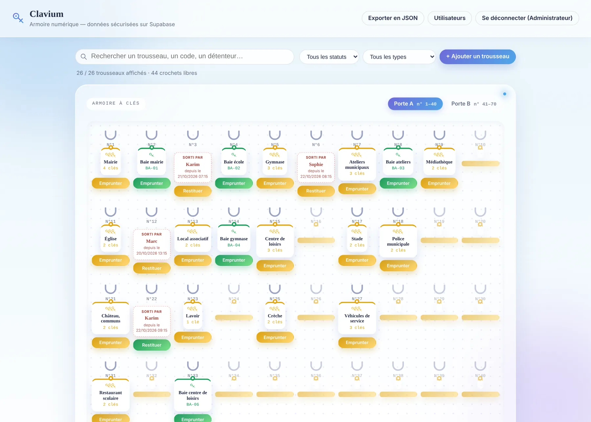
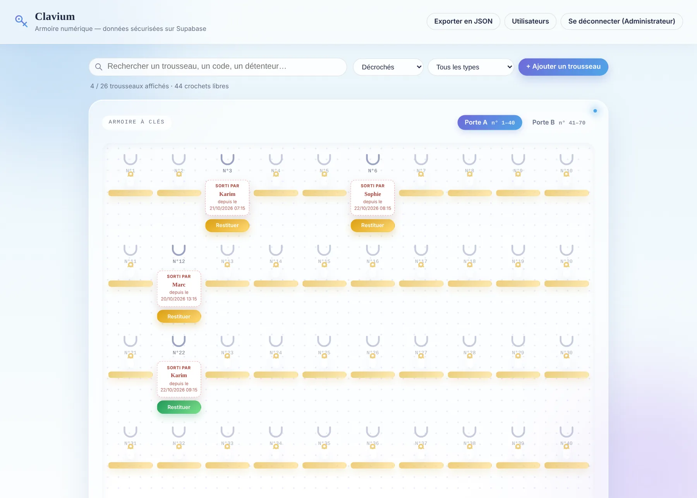
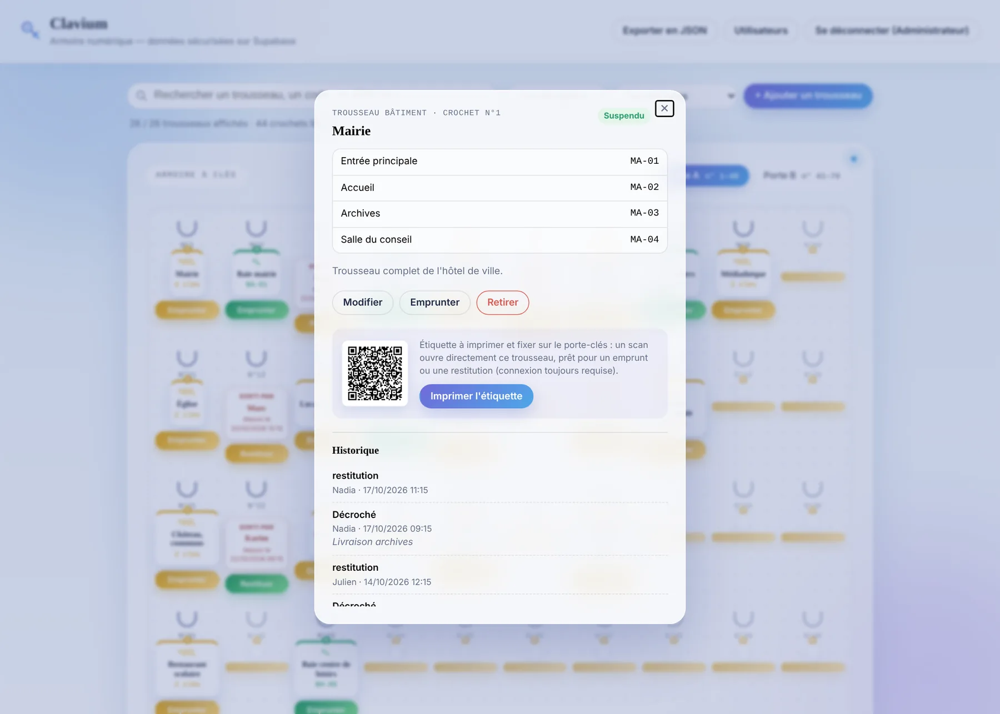
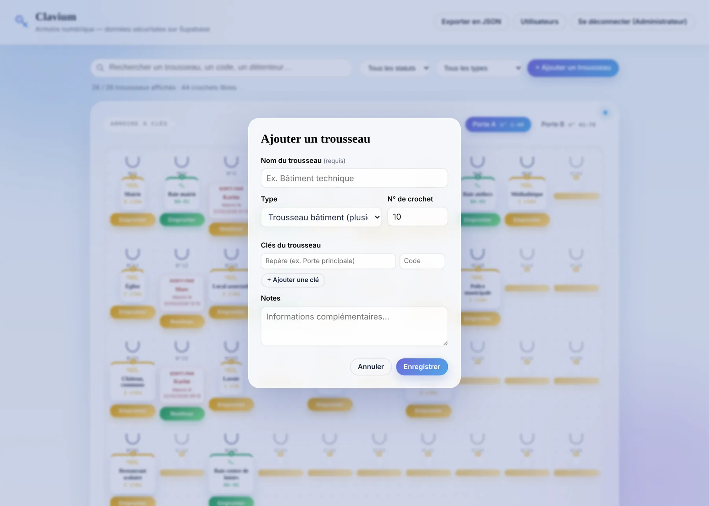
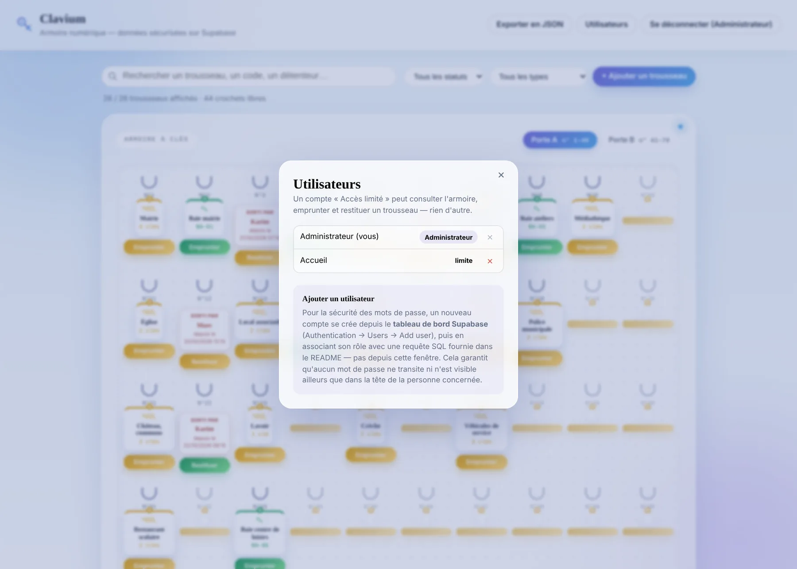
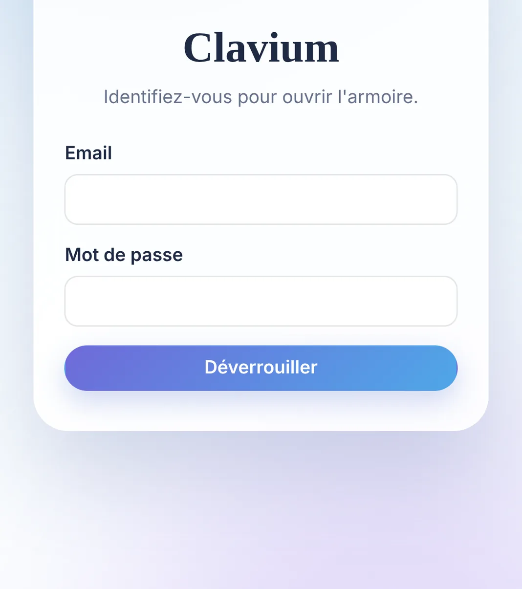

Voir
L'armoire, telle qu'elle est.
Soixante-dix crochets numérotés, répartis sur deux portes. Les trousseaux de bâtiment en or, les clés de baie informatique en vert. Un crochet vide se voit tout de suite.
Nos communes en commun
Chaque clé à sa place, chaque sortie à un nom.

Le constat
Un crochet vide. Personne ne sait qui a pris la clé, ni depuis quand. Le cahier de sortie n'est plus rempli, l'étiquette est effacée. Clavium reproduit l'armoire à l'écran : chaque trousseau sur son crochet, chaque sortie au nom de celui qui l'emprunte, chaque retour daté.




Crochet 01 / 05
Voir
Soixante-dix crochets numérotés, répartis sur deux portes. Les trousseaux de bâtiment en or, les clés de baie informatique en vert. Un crochet vide se voit tout de suite.
Suivre
Un trousseau décroché laisse un ticket à sa place : le nom de la personne, la date et l'heure de sortie. Un filtre isole en un clic tout ce qui est dehors.
Identifier
Chaque fiche liste les clés et leurs codes, et garde l'historique des sorties et des retours. Son QR code s'imprime pour le porte-clés : un scan ouvre directement la fiche.
Organiser
Un nom, un type, un numéro de crochet, puis les clés une à une avec leur repère. L'armoire se construit au rythme des besoins de la commune.
Contrôler
L'administrateur gère l'armoire. Un compte à accès limité consulte, emprunte et restitue, rien de plus. Les comptes se créent hors de l'application, sans qu'aucun mot de passe ne circule.
Une base solide

Données et sécurité
Savoir où se trouve la clé d'un bâtiment public, c'est une information sensible. Clavium a été pensé avec cette exigence dès le départ.
Un compte à accès limité ne peut ni ajouter, ni modifier, ni retirer un trousseau, quoi qu'affiche l'écran.
Le mot de passe n'est jamais vérifié ni conservé dans le navigateur.
Scanner une étiquette mène à la fiche du trousseau, mais la connexion reste toujours exigée.
Chaque sortie et chaque retour sont consignés avec un nom et une date.
Les données servent uniquement à gérer l'armoire. Une sauvegarde complète s'exporte à tout moment.
Les modalités d'hébergement, de conservation et de conformité au RGPD seront précisées avec la direction avant tout déploiement élargi.
Passer à l'essai
Une démonstration sur une seule porte suffit pour juger de la simplicité de l'outil et du temps gagné à chaque clé cherchée.